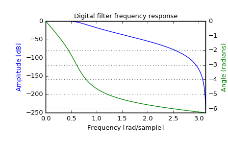

scipy.signal.freqz_zpk¶
-
scipy.signal.freqz_zpk(z, p, k, worN=None, whole=False)[source]¶ Compute the frequency response of a digital filter in ZPK form.
Given the Zeros, Poles and Gain of a digital filter, compute its frequency response:
:math:`H(z)=k \prod_i (z - Z[i]) / \prod_j (z - P[j])`
where \(k\) is the gain, \(Z\) are the zeros and \(P\) are the poles.
Parameters: z : array_like
Zeroes of a linear filter
p : array_like
Poles of a linear filter
k : scalar
Gain of a linear filter
worN : {None, int, array_like}, optional
If None (default), then compute at 512 frequencies equally spaced around the unit circle. If a single integer, then compute at that many frequencies. If an array_like, compute the response at the frequencies given (in radians/sample).
whole : bool, optional
Normally, frequencies are computed from 0 to the Nyquist frequency, pi radians/sample (upper-half of unit-circle). If whole is True, compute frequencies from 0 to 2*pi radians/sample.
Returns: w : ndarray
The normalized frequencies at which h was computed, in radians/sample.
h : ndarray
The frequency response.
See also
Notes
Examples
>>> from scipy import signal >>> z, p, k = signal.butter(4, 0.2, output='zpk') >>> w, h = signal.freqz_zpk(z, p, k)
>>> import matplotlib.pyplot as plt >>> fig = plt.figure() >>> plt.title('Digital filter frequency response') >>> ax1 = fig.add_subplot(111)
>>> plt.plot(w, 20 * np.log10(abs(h)), 'b') >>> plt.ylabel('Amplitude [dB]', color='b') >>> plt.xlabel('Frequency [rad/sample]')
>>> ax2 = ax1.twinx() >>> angles = np.unwrap(np.angle(h)) >>> plt.plot(w, angles, 'g') >>> plt.ylabel('Angle (radians)', color='g') >>> plt.grid() >>> plt.axis('tight') >>> plt.show()
